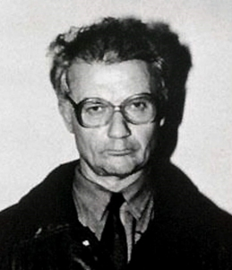
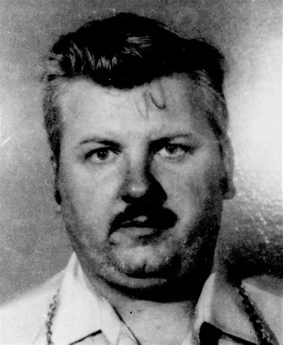

Also called as "the Milwaukee Cannibal or the Milwaukee Monster", was an American serial killer and sex offender who killed and dismembered 17 men and boys between 1978 and 1991.Many of his later murder committed his first murder in Ohio in 1978; he did not resume killing until 1987. The modus operandi for many of his later crimes him luring a victim to his Wisconsin apartment where they be drugged, sexually assaulted, and murdered Dahmer was

Soviet serial killer nicknamed"the Butcher of Rostov", "the Rostov Ripper", and "the Red Ripper" who sexually assaulted, murdered, and mutilated at least fifty-two women and children between 1978 and 1990 in the Russian SFSR, the Ukrainian SSR,and the Uzbek SSR.
Chikatilo confessed to fifty-six murders;
he was tried for fifty-three murders in April 1992. He was convicted and sentenced to death for fifty-two of murders in October 1992 Supreme court of Russia ruled in 1993 that insufficient evidence existed

Also Called as"The Killer Clown and Pogo the Clown" , was a European-American serial killer and rapist. He is confirmed to have killed 33 young men and teenage boys. He killed them in a brutal way and buried their bodies in or near his Chicago home. Gacy did not use a gun for any of his crimes.Gacy became known as "Pogo the Clown" and the "killer clown" because he would dress as a clown for fundraising events and parades. In March 1980 the Supreme Court of Russia ruled in 1993 John Wayne Gacy in Chicago, Illinois, to father John Stanley Gacy ...,
Also called as "the Night Stalker, the Walk-In Killer" was an American serial killer, sex offender and burglar whose killing spree occurred in Greater Los Angeles and the San Francisco Bay Area in the state of California. From April 1984 to August 1985, Ramirez murdered at least fifteen people during various break-ins, with his crimes usually taking place after dark.Ramirez's crimes were heavily influenced by a troubled childhood. Frequently abused by his father, he developed brain damage and started abusing drugs at the age of 10.
The relationship between psychopathy and police officers is a complex and multifaceted issue. Research indicates that while psychopathic traits are present in the general population, they are often more pronounced in individuals who are in high-stress environments, such as law enforcement. This suggests that the stressors of policing may exacerbate the expression of psychopathic traits, leading to potentially aggressive and manipulative behavior in police officers. A cross-sectional analysis of psychopathy traits among police officers found significant differences in these traits based on age and time spent in the job. This suggests that as officers gain experience and face more stress, they may develop or exacerbate psychopathic traits. The implications of this relationship are significant, as it raises concerns about the potential impact on community safety and trust in law enforcement. It is crucial for law enforcement agencies to implement measures to mitigate the negative effects of psychopathy, such as enhanced recruitment screening and emotional intelligence training. Understanding the prevalence and impact of psychopathy in police officers is essential for improving policing practices and ensuring the safety and well-being of the community.